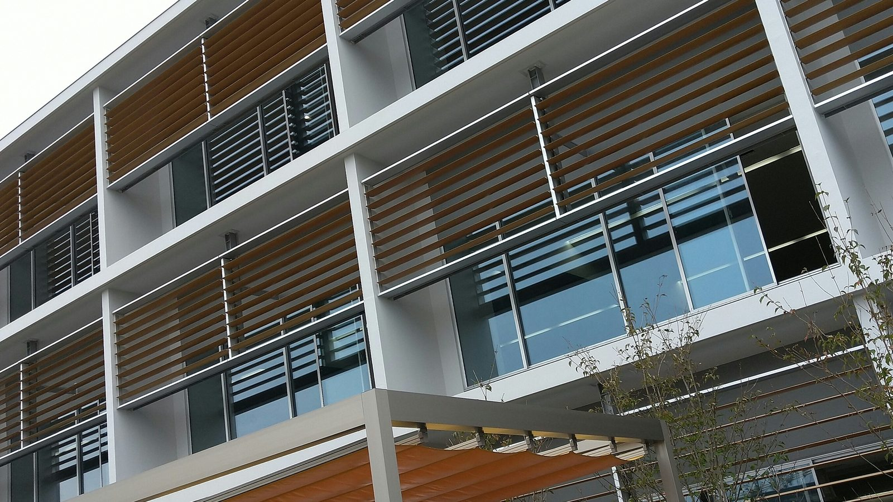
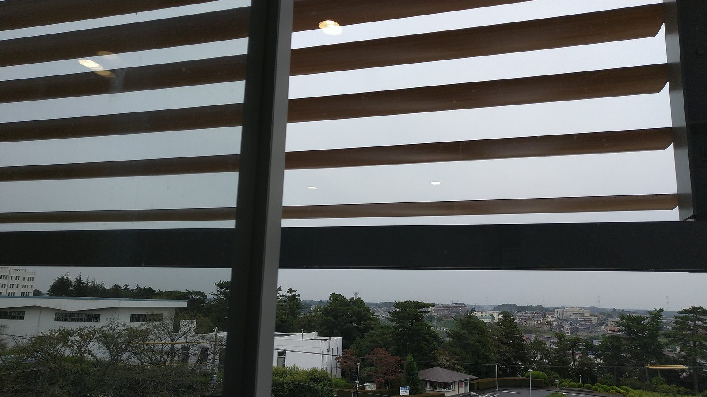
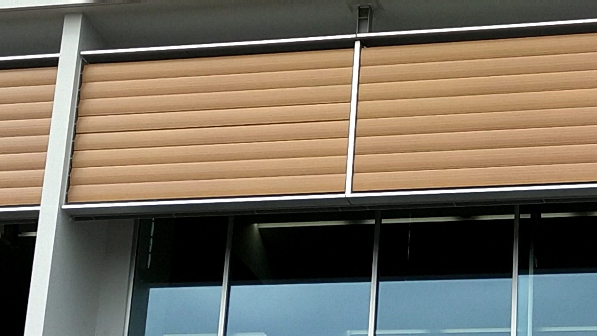
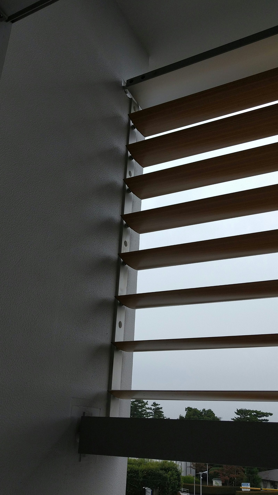
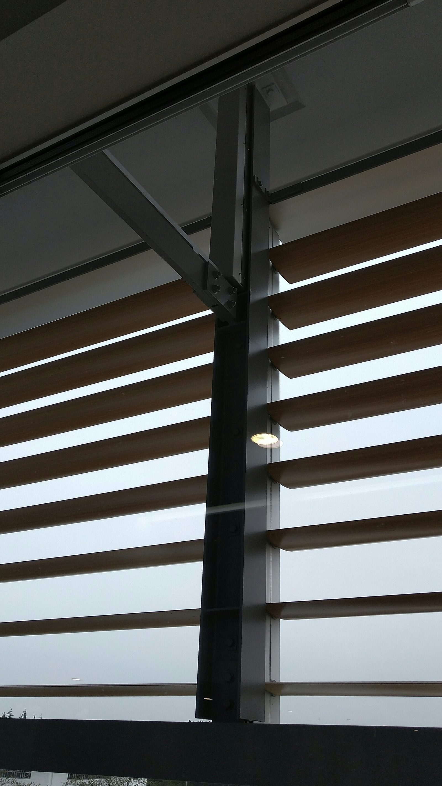
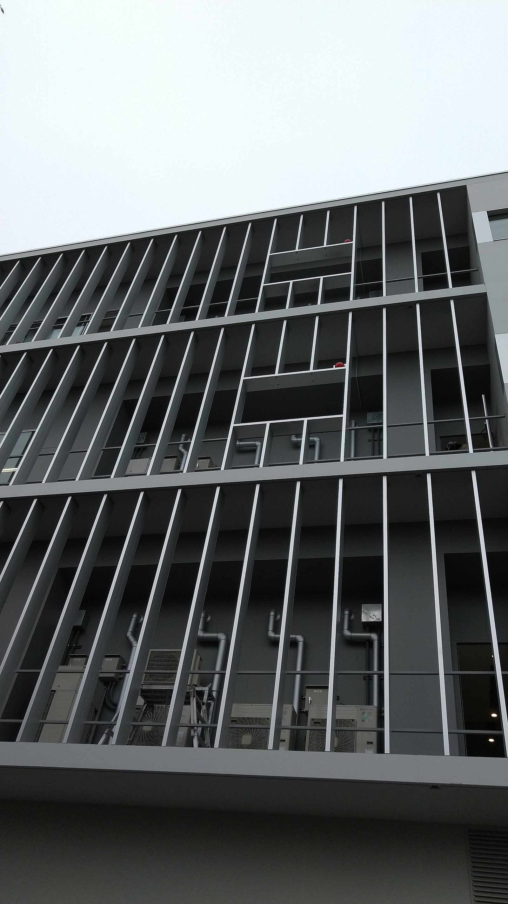

Cases導入事例








千葉DC我孫子研究所
木目調のヨコラインルーバーを、365日タイマーで自動制御。
研究所の執務エリア外周に、木目調転写塗装のヨコライン（横型）可動ルーバーを設置。365日タイマー式の自動制御システムにより、季節と時刻に応じた最適な角度で日射を遮蔽します。
室内からは、ルーバーのすき間越しに周囲の景色が見え、閉塞感のない明るい執務空間を実現。西日対策と空調負荷の低減を同時に叶えた事例です。
| 納入年 | 2020年 |
|---|---|
| 都道府県 | 千葉県 |
| 用途 | 事務所・研究施設 |
| 製品 | Airfoil 210 @200 ヨコライン / 電動式 / 木目調転写塗装 / 自動制御システム（タイマー式） |
| 制御方式 | 自動制御システム（タイマー式） |